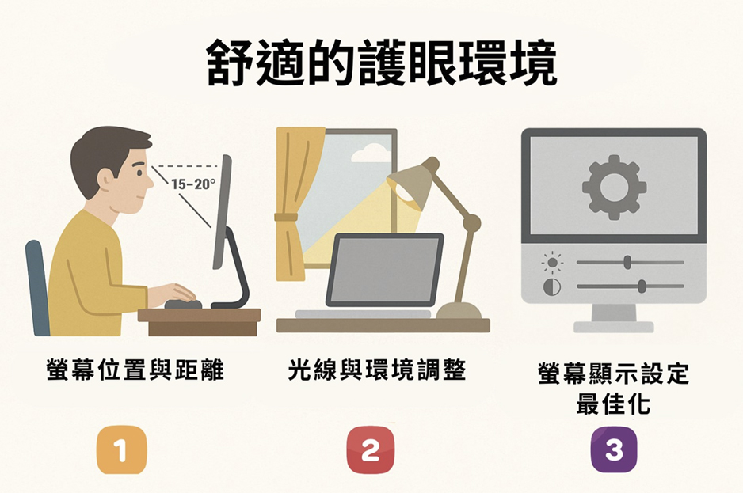
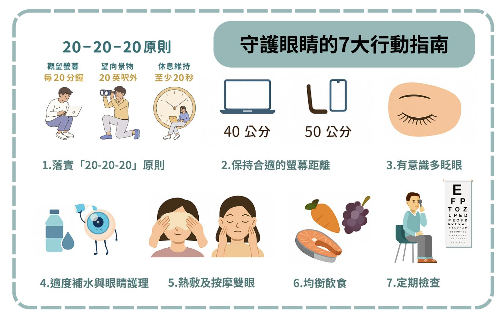

月號－健康大小事
月號－健康大小事|
對大多上班族來說，電腦是每日不可或缺的工作夥伴，但長時間盯著螢幕，會讓雙眼承受很大的負擔。眼睛乾澀、酸脹、視力模糊，甚至出現頭痛、注意力下降，都是常見的「電腦視覺症候群」症狀。 |
|
若缺乏良好的護眼習慣，長期下來不僅會影響工作效率，也可能會加速眼睛老化；眼睛是我們的靈魂之窗，也是職場的生產力來源，現在就讓我們學習幾個簡單實用的護眼方法，讓工作更專注、視力更健康。 |
|
|
| 眼睛過度疲勞，小心視力亮紅燈！出現這些症狀，代表眼睛正在求救。 |
|
1. 眼睛乾澀：長時間盯著螢幕，眨眼次數減少，導致眼睛缺乏滋潤。 |
| 如何營造舒適的護眼環境? |
|
1. 調整螢幕位置與距離 |
|  |
|
|
| 守護眼睛的7大行動指南 |
|
1. 落實「20-20-20」原則 |
|  |
| 高風險族群護眼提醒 |
|
1. 上班族（長時間使用電腦與3C） |
|
現代人長時間使用電腦與手機，讓我們的眼睛承受不少壓力。養成護眼習慣並定期檢查，不僅能提升專注力，也能守護長遠的健康。從今天開始，給自己多一點關心，讓雙眼在忙碌的生活裡，也能保持清晰與舒適。 |
|
|
|
資料來源
1.
長時間滑手機、盯電腦？7大護眼妙方一文看清 |